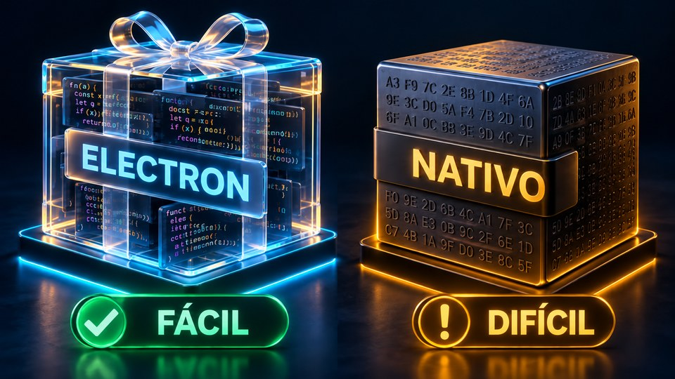
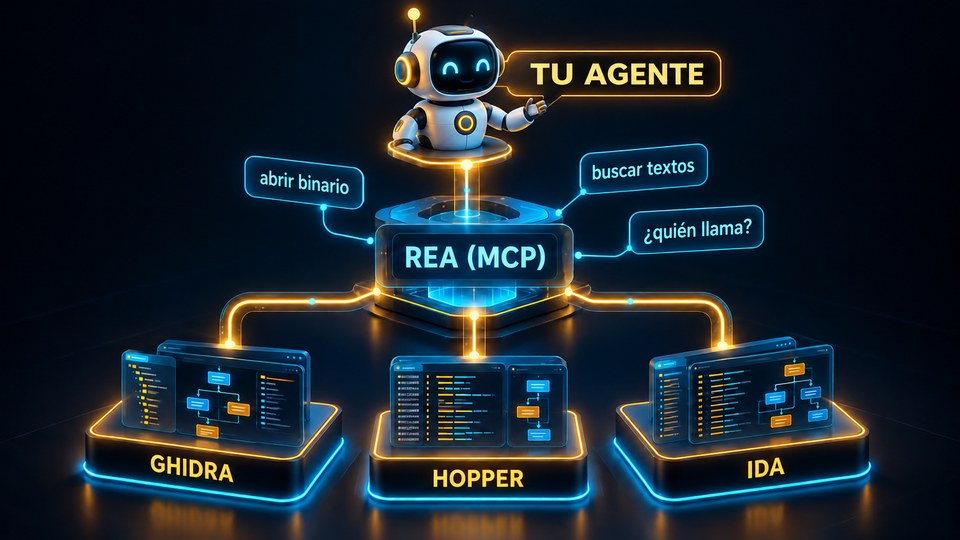
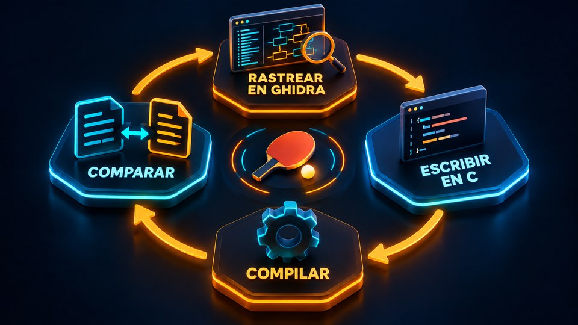
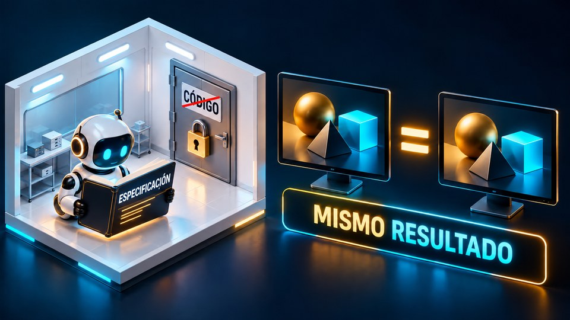

REA le da a Claude Code, Codex o Cursor las herramientas de ingeniería inversa. Aquí entiendes la tecnología, ves los casos reales y descubres si te conviene.
La ingeniería inversa es descubrir cómo funciona un programa mirando solo el ejecutable, sin el código fuente. REA (Reverse Engineer Anything) es una herramienta abierta que conecta a tu agente de IA con descompiladores como Ghidra, de la NSA, y devuelve las conclusiones con la prueba y los límites de cada una. Sirve para desarrolladores, gente de seguridad y quien estudia software. Esta guía reúne los enlaces, lo explica todo en español, muestra casos reales y una prueba hecha aquí. Para usarlo necesitas Node.js y un agente de IA en la terminal.
REA no es un descompilador nuevo. Le da al agente comandos simples sobre Ghidra, Hopper e IDA, que antes tardaban semanas en dominarse.
Abre binarios nativos (Mac, Windows, Linux), apps Electron/JavaScript, .NET, Android y sitios web, y muestra cómo funciona una función.
Cada respuesta viene en cuatro partes: evidencia, mapa recuperado, límites y lo que quedó sin respuesta. Nada de párrafos "confía en mí".
El análisis se ejecuta localmente. El programa analizado no se envía; solo los resultados van al modelo de tu agente.
Compilar borra nombres, tipos y comentarios. La ingeniería inversa es el camino de vuelta, y REA pone al agente a recorrerlo.


Para apps JavaScript/Electron basta Node. Para binarios nativos, un descompilador instalado.
Versiones 22.19+, 24.11+ o 26+ (23 y 25 no son compatibles).
node -vClaude Code, Claude Desktop, Codex, Cursor, Gemini CLI, Windsurf, OpenCode, Copilot CLI, VS Code y otros.
claude --versionGhidra (gratis, requiere Java), Hopper o IDA. El setup puede instalar Hopper, con tu permiso.
# Ghidra: descárgalo en github.com/NationalSecurityAgency/ghidra/releases
De los tres que acepta el REA, solo Ghidra es totalmente gratuito y de código abierto. IDA tiene una versión Free, con límites.
| Herramienta | ¿Gratuita? | ¿Código abierto? | Precio |
|---|---|---|---|
| Ghidra | Sí | Sí | US$ 0 |
| Hopper | Prueba gratis | No | Licencia de pago |
| IDA | Versión Free | No | Pro desde ~US$ 1.099/año |
Hecho por la NSA, funciona en Windows, Linux y Mac, descompila y admite automatización con scripts. Sin costo de licencia, incluso para uso comercial.
Comercial, con prueba gratuita. La versión actual anuncia integración MCP nativa, algo útil para agentes de IA.
IDA Free solo cubre x86/x64 y uso no comercial, y no incluye la API IDAPython de los planes de pago, lo que dificulta la automatización.
| Agente de IA (Codex o Claude Code) | Variable: suscripción o tokens |
| REA + MCP | Gratis (MIT): integración y orquestación |
| Ghidra | Gratis y de código abierto |
Conclusión: para montar tu propio sistema de ingeniería inversa con agentes, empieza con REA + Ghidra + Codex. No hay licencia de descompilador que pagar, y el análisis corre en una máquina Windows o Linux, incluso en un VPS bien configurado. El costo principal está en el procesamiento y en los tokens de la IA, si usas un modelo de pago. Los precios cambian: revisa los sitios oficiales antes de comprar.
Comandos del propio proyecto. REA cambia casi todos los días: revisa la versión antes.
El análisis estático de una app Electron no necesita Ghidra ni MCP, y no ejecuta la app. Apunta a la carpeta o al app.asar.
npx -y rea-agents@latest analyze-javascript-application /ruta/absoluta/app.asar --json
El setup muestra el plan, hace una copia de tu configuración y pregunta antes de cambiar. Registra el servidor MCP e instala el método de investigación (skill).
npx rea-agents setup # reinicia el agente después
El doctor con alcance prueba un agente o un motor específico, sin reprobar por algo que ni vas a usar.
rea doctor --client claude_code --json rea doctor --provider ghidra --json
En lenguaje normal, con un programa tuyo o que tengas autorización para analizar.
"Entiende cómo funciona la búsqueda en la app X, muéstrame la evidencia
y haz algo parecido en mi proyecto."
Números tomados de los repositorios y del sitio oficial el 10/10/2026.
FUN_…). El agente encontró la función correcta, recuperó las 3 reglas del código y escribió un generador: AGNT-1001 abrió.

Evaluación hecha a partir de la documentación, de los casos publicados y de una prueba en esta máquina.
• Desarrolladores que quieren entender cómo una app muy buena resuelve búsqueda, sincronización o portapapeles.
• Seguridad y privacidad: auditar las apps de tu máquina y ver qué envían hacia afuera.
• Recuperar la lógica de un programa tuyo cuyo código se perdió.
• Estudio, CTF y preservación de software antiguo.
• Quien crea herramientas para IA: el formato evidencia · mapa · límites · desconocidos es un excelente modelo.
• Quien no usa terminal: exige Node y paciencia con versiones que cambian todos los días (5.0 → 6.3 en tres días).
• Copiar el producto de un competidor: arriesgado legalmente y pierde el sentido.
• Programas muy protegidos (VMProtect, ofuscación pesada) o con la lógica en el servidor.
• Esperar milagros de cualquier modelo: en binarios protegidos a propósito, incluso los mejores modelos resuelven solo parte de los casos (SRE-Bench).
Corrimos REA 6.3.0 (analyze-javascript-application, sin Ghidra y sin MCP) en un servidor Linux ARM. Funcionó en una app Node nuestra (97 archivos, 3,5 MB): en 20 s y 1,3 GB de RAM devolvió un grafo con 2.109 nodos y 3.104 enlaces, 2.508 hallazgos y 5 limitaciones declaradas, sin ejecutar la app. Se trabó en dos objetivos que tenían un único archivo JS gigante (el bundle de una app Electron instalada y typescript/_tsc.js, de 6 MB): quedó al 100% de CPU por más de 20 min en el mismo archivo, ignoró el SIGTERM y solo se detuvo con kill -9. Conclusión: funciona bien en proyectos de tamaño normal; en apps grandes, córrelo con límite de tiempo (timeout -s KILL) y sin node_modules. El JSON completo es enorme (241 MB aquí): en el día a día, deja que el agente lo consulte por MCP en vez de leer el archivo entero.
Para quien vende software: asume que cualquier agente puede mapear tu app. Lo que protege son los datos, el servidor, la distribución, la confianza y la velocidad, no el código cerrado.
Proyectos de terceros. Estrellas y versiones verificadas el 10/10/2026.
REA: MCP + CLI de ingeniería inversa para agentes. TypeScript, MIT, ~61 mil estrellas, versión 6.3.0.
Sitio oficial con guías ilustradas (nativo, JavaScript, navegador) y los estudios de caso.
Descompilador gratuito y abierto de la NSA. Java, Apache-2.0, ~82 mil estrellas, versión 12.1.4.
DX-Ball 1.07 reconstruido en C/C++ con REA + Ghidra, probado byte a byte. MIT. Los archivos del juego no vienen incluidos.
Reconstrucción de un juego de PC-98 (DOS, 16 bits): el cálculo de los anillos de disparos. MIT.
Photoshop rehecho desde cero en Rust (clean room), ~39 mil estrellas, alfa. También FilmCraft (Premiere) y LightCraft (Lightroom), de la suite ArtCraft.
Benchmark de la Universidad de Columbia: agentes haciendo ingeniería inversa de binarios con protección. En desarrollo.
README en PT/EN/ES con los enlaces y la evaluación.
El propio REA lo advierte: la responsabilidad es tuya.
rea update o npx rea-agents@latest setup antes de reportar un problema.